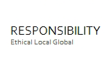
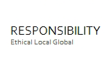

Coffee
Introducing Starbucks® Blonde Roast
Tuesday, October 18, 2011
Posted by Dub H., senior vice president, coffee
Today marks an exciting day as we announce the newest addition to our Starbucks Roast Spectrum ? Starbucks® Blonde Roast. This roast builds on our experience ? over 40 years ? in artisanal roasting and sourcing to bring you a truly lighter-bodied coffee. Starbucks® Blonde Roast joins our current lineup that includes medium and dark roasts giving you a spectrum of options and making it easier for you to find your favorite coffee.
We explored more than 80 recipes before we selected the final coffees for Starbucks® Blonde Roast. The new coffees included in this category are Starbucks Veranda Blend™, Starbucks Willow Blend™, Decaf Starbucks Willow Blend™ and Starbucks VIA® Ready Brew Veranda Blend™.
Brewin’ Up Something Special From Hawaii
Wednesday, October 05, 2011
Posted by Leslie W., senior green coffee specialist
A new coffee is arriving for Starbucks Reserve and we are delighted to share it with you. Ka’u coffee takes its name from the Ka’u district on the Big Island of Hawaii. The Ka’u region is located on the slopes of the volcano Mauna Loa. The area was traditionally used for growing sugar cane, but after the exodus of sugar plantations the soil was well-suited to grow coffee. With over 2,000 acres of prime land in the district of Ka’u there are approximately 280 acres planted and worked by about 40 farmers. Here Ka’u coffee is quietly transforming this small region into a world-class coffee source that’s gaining attention.
Help Us Support Education in Your Community
Friday, September 23, 2011
Posted by Rodney H. ? Community Investments director
Recent reports tell us that a quarter of U.S. students do not
graduate from
high school on time. For young people of color, this number is close to 40 percent.
Sadly, it is not news that fewer and fewer of us in the U.S. successfully graduate.
Nor is it news that America’s educational system must better address the 21st
century needs of our citizens. It’s a huge task that no single entity can change.
Starbucks is committed to being a catalyst for change by leveraging our stores,
our partners and the connection we have with our customers. Through our Youth
Action Grants, we’ve supported young people in the U.S. and around the world in
taking action to address needs in their local communities. We’ve mobilized
thousands of Starbucks partners and customers to make a difference by doing
community service to improve their local schools and revitalize local parks.